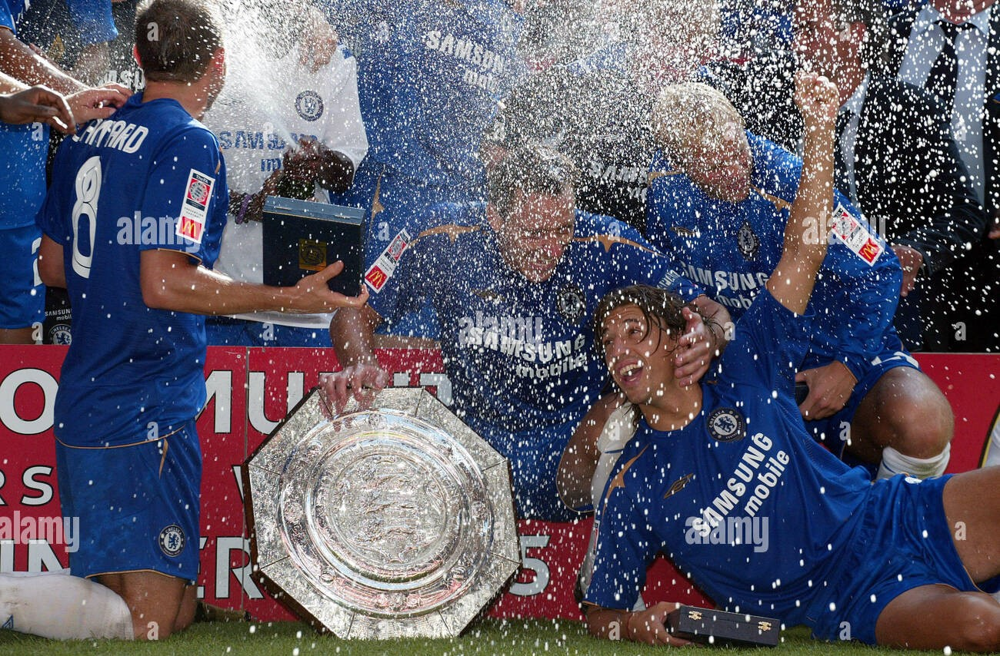

Actualité
Réalisation
photo
Contact
Moment historique
2 Ligue des Champions
2 Ligue Europa
2 Super coupe de l'UEFA
6 fois champion d'angleterre
8 coupe d'anglettere
4 community sheald

5 coupe de la Ligue
1 coupe du monde des club